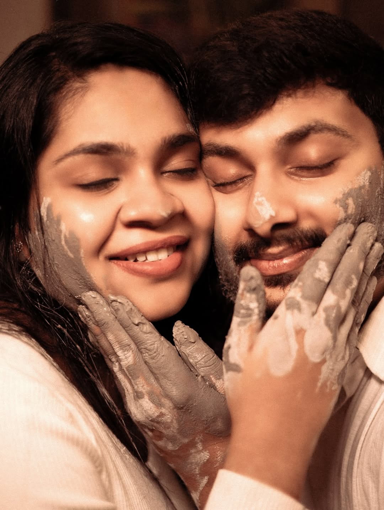
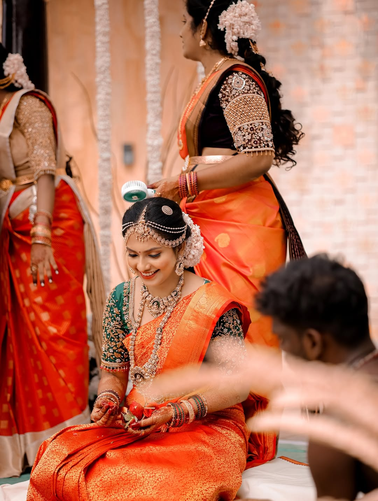
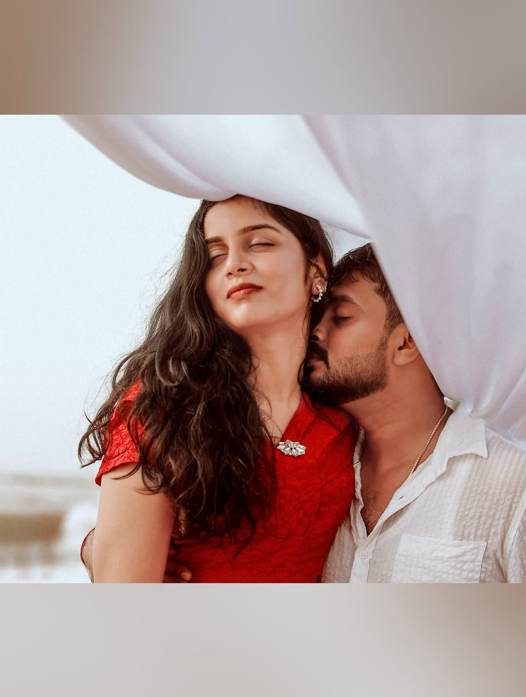
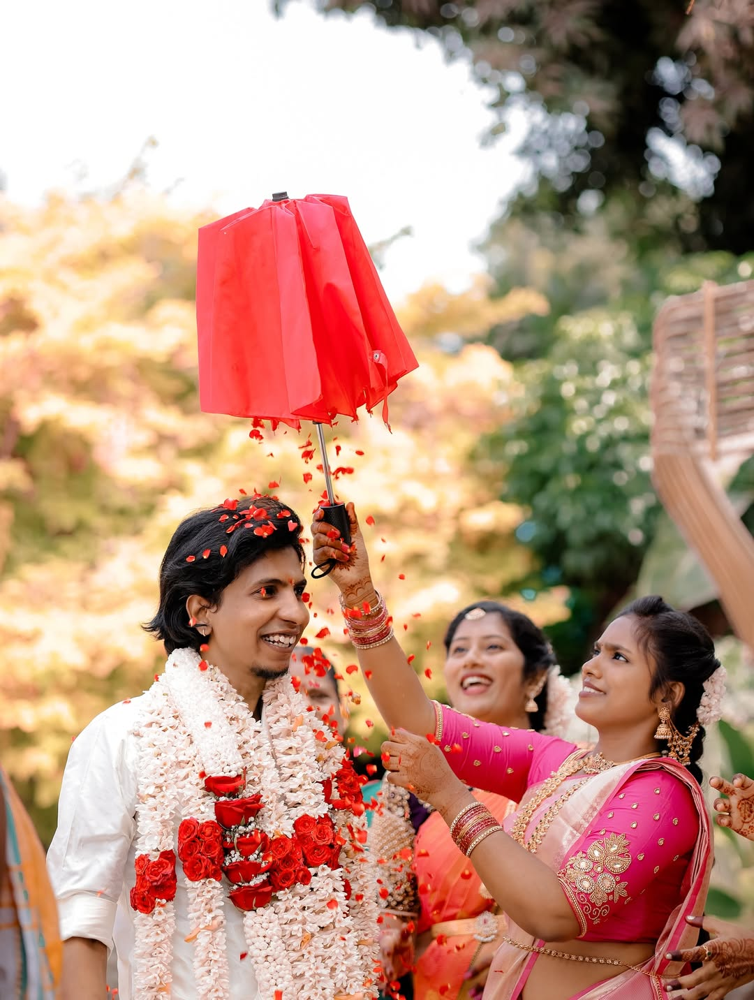
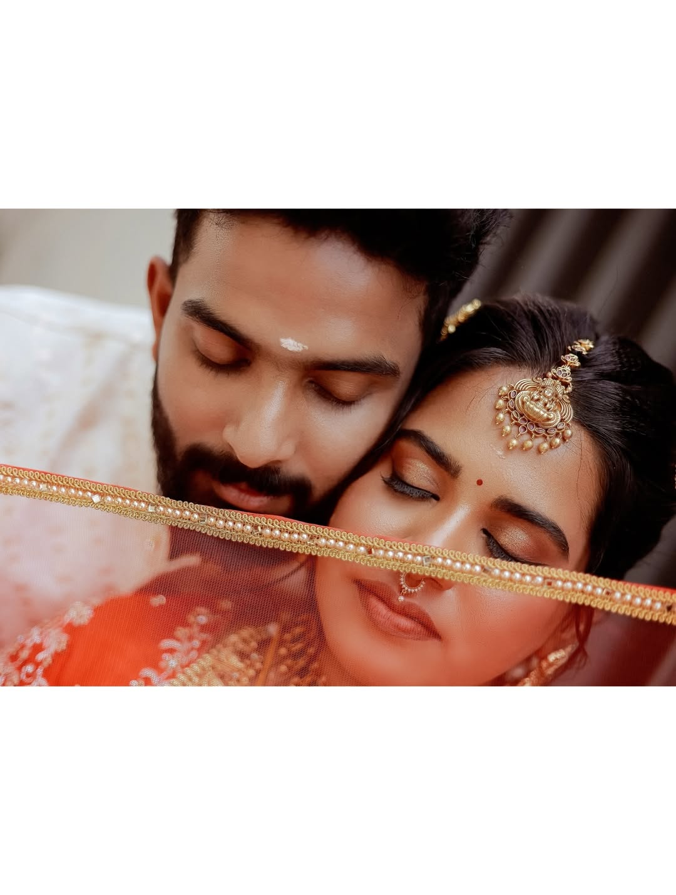
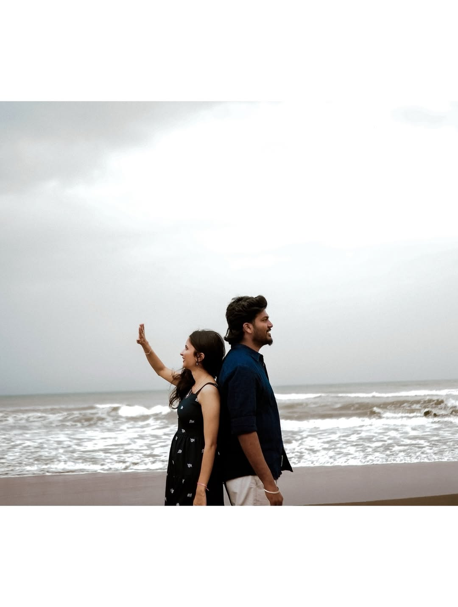
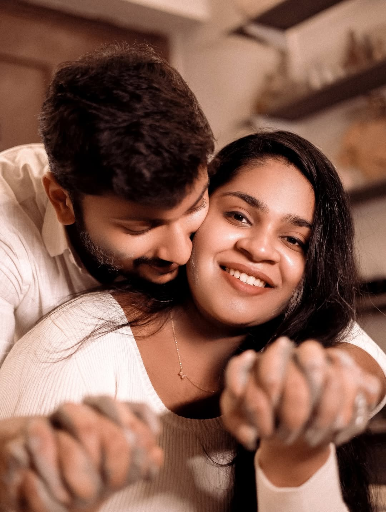
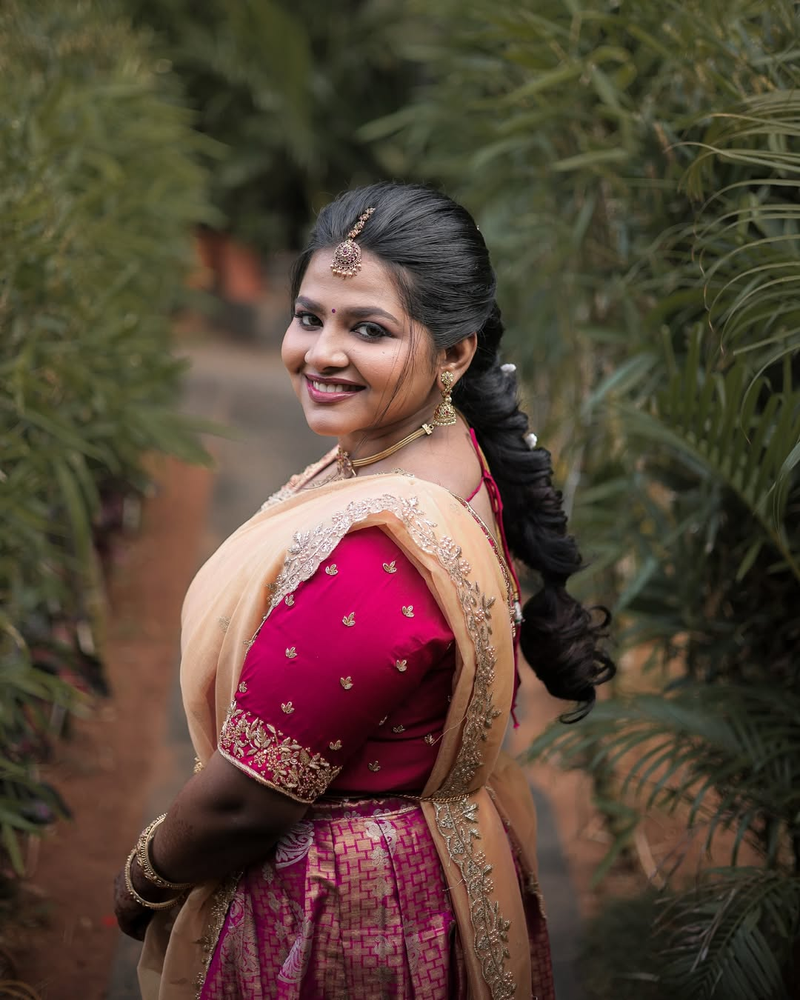

Weddings
All the noise. All the quiet.
↗WEDDINGS · PORTRAITS · FILMS
Cinematic memories of people, rituals and everything that happens between the frames.
BEFORE THE SHUTTER


No two stories ask to be remembered in the same way.



“The frame changes.
The feeling remains.”


BEHIND THE CAMERA
Every story begins before the shutter clicks.
Aruve Pictures was built around one simple instinct — to notice what others miss. The quiet glance. The nervous smile. The hands, the rituals, the stillness before celebration.
Behind every frame is a person searching for honesty, emotion and memory.
Frames are not taken. They are felt.

All the noise. All the quiet.
↗Two people, no performance.
↗Presence, held still.
↗The room as it really felt.
↗Ritual, colour, inheritance.
↗Memory, allowed to move.
↗Unhurried. Personal. Made around the way your story wants to unfold.
YOUR TURN
Tell us what you are celebrating. We will take it from there.
Let’s make something
worth returning to.